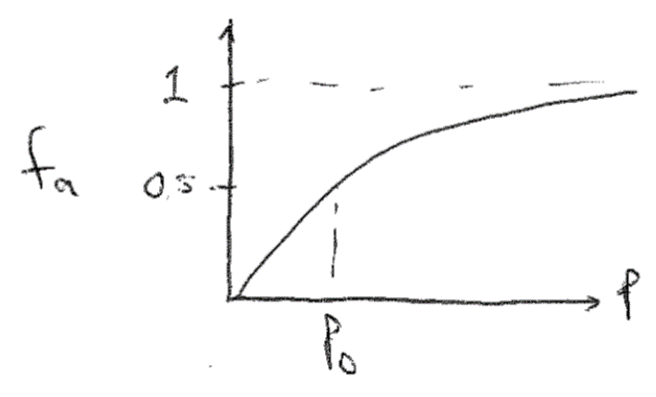

The Langmuir Isotherm and Ising Model#
Additional Readings for the Enthusiast#
- Ch. 4.6, 4.7, 5.1
Topics in this lecture#
The ideal gas partition function in the classical limit
The Langmuir adsorption isotherm
The Ising model
Announcements#
Pset 2 due today
Pset 3 assigned, due next Thursday
Exam 1 on Thursday, October 10
Ideal gas partition function in the classical limit#
In the last lecture, we described the factorization of the partition function for independent, identical subsystems, and defined the following approach for studying these systems:
Determine a single-particle energy and corresponding single-particle partition function
Write a partition function for the entire system using the single-particle partition function
Derive thermodynamic quantities via derivatives of the partition function
We then used this approach to start analyzing the behavior of a monatomic ideal gas. Starting from the expression for the energy of a quantum particle in a box and then assuming that energies were continuous to solve for the degeneracy for each state, we arrived at the following single-particle partition function:
Here, recall that \(h\) is Planck’s constant, \(V\) is the physical volume of the system, and \(m\) is the mass of the particle. We then made an important assumption: if the difference between consecutive terms in the sum is small (i.e., energy levels are nearly the same), then we can accurately approximate the sum by a continuous integral. This assumption is equivalent to the method for deriving Stirling’s approximation, and transforms a sum over discrete states to an integral over a continuum of states. This assumption is also referred to as assuming that the system is at the classical limit: quantum mechanics is defined by discrete states whereas the classical limit is defined by continuous states because the difference in energy between states is extremely small. In the classical limit, the ideal gas partition function becomes:
We can analytically solve this expression by defining \(u = \beta\epsilon_{\nu}\) and recognizing the standard integral \(\int_0^\infty u^{1/2}e^{-u} du = \sqrt{\pi}/2\). Simplifying yields our final expression for the single-particle partition function for the ideal gas:
We can then write the full partition function of the system, remembering that the particles are indistinguishable, using the result for the factorization of the partition function:
In the last line, we define:
where \(\lambda\) is the thermal de Broglie wavelength which has units of length and is a function of \(T\); this simplifies our notation and defines a characteristic length scale for treating a gas classically - if \(V \gg \lambda^3\), which we will generally assume to be the case, then the classical limit is reasonable.
We have now performed the first two steps in our approach by identifying an expression for the energy of a microstate of our system and calculating the corresponding partition function (in the classical limit) from the single-particle partition function. We can next derive thermodynamic relationships using the connection between the canonical partition function and the Helmholtz free energy. Let us first calculate the ensemble-average pressure of an ideal gas:
This expression for the pressure is the familiar ideal gas equation of state, derived solely from statistical mechanics. Note that \(R\), the ideal gas constant, is related to \(k_B\) by a constant factor of Avogadro’s constant, \(N_A\), or \(R = N_A k_B\). Basically, this is just a unit conversion. The only input to obtain this relationship is an energy function from quantum mechanics - therefore this is entirely a first-principles derivation that does not rely on empirical measurements. In the third line we divided the partition function into a term that is a function of \(V\) and one that is not; the second term does not contribute to the expression for \(P\).
We can next calculate the average energy of an ideal gas. Recall that we can relate the energy to the canonical partition function (from a previous lecture) via:
We apply this definition by writing out the partition function and separate into the temperature-dependent and temperature-independent terms:
Taking the derivative gives:
This again is a familiar expression - the internal energy of an ideal gas depends only on the temperature, and we obtain the same prefactors as in thermodynamics. We can now easily also calculate the heat capacity at constant volume, \(C_V\):
These last two results are manifestations of the equipartition theorem, which states that any degree of freedom that appears quadratically in the energy of a system contributes \(1/2 k_BT\) to the internal energy and contributes \(1/2 k_B\) to the heat capacity in the classical limit. Here, there are 3 translational degrees of freedom corresponding to the three quantum numbers that each contribute a quadratic energy term (the kinetic energy) for each of the \(N\) atoms, leading to \(3/2 N k_B\) for the heat capacity as we found.
Finally, we can compute the chemical potential of an ideal gas using the ideal gas partition function:
The last formula expresses the chemical potential in terms of a first term, which is temperature dependent but concentration (\(\rho\)) independent, and then a second concentration-dependent term. This form for the chemical potential is again exactly what is observed for ideal gases in classical thermodynamics.
The Langmuir adsorption isotherm#
The previous approach shows that statistical mechanics can reproduce classical thermodynamic relationships from first-principles. We will now test a second example of the three-step approach for studying independent particles by deriving the Langmuir adsorption isotherm.
Consider a system of \(N\) ideal gas particles that can adsorb onto a surface. Physically, this system could represent the adsorption of reactants onto a catalytic surface, for example. We define the number of adsorbed particles as \(N_a\) and the remaining number of free gas particles as \(N-N_a\). Particles adsorb favorably with an energy of \(-\epsilon_a\) per particle. To simplify our treatment, we assume all particles adsorb onto a lattice of discrete with \(N_s\) possible binding sites, of which \(N_a\) are occupied assuming that only a single particle can bind to each site (with \(N_s > N_a\), allowing for all particles to adsorb). All binding sites are assumed to be independent; that is, the arrangement of particles does not affect the energy of the system. The quantity we will determine is the fraction of the surface that is occupied as a function of the pressure of the surrounding gas, \(f_a(P)\).
 {width=”60%”}
{width=”60%”}
We next have to consider what ensemble to use to solve this problem. We can think of particles adsorbed to the surface and particles free in the bulk as two distinct sets of particles such that particles are free to exchange between the surface and bulk. The number of particles adsorbed to the surface, \(N_a\), is thus allowed to vary. \(\langle N_A \rangle\) will be determined at equilibrium which is reached when each particle adsorbed to the surface has a constant chemical potential, \(\mu_a\), that is equal to the chemical potential of each particle in the bulk, \(\mu_b\). Since the number of particles can vary on the surface, the natural ensemble to consider is the grand canonical ensemble because the natural variables of the ensemble, \(\mu V T\), are the same variables that are constant at equilibrium. We thus treat the surface as the system.
The surface has \(N_s\) potential binding sites; each binding site is either occupied or not, with the number of occupied sites (\(N_a\)) fluctuating. We aim to find an expression for \(f_a = \frac{N_a}{N_s}\). Since \(N_a\) can vary, we really seek the ensemble average value of \(N_a\), so that \(f_a = \frac{\langle N_a \rangle}{N_s}\). Since each binding site is independent and identical, we can factorize the partition function by treating each site as a subsystem that is either occupied or unoccupied, meaning that a single particle is adsorbed to the site or not. Since the sites are spatially distinct, each subsystem is distinguishable. We then write the grand canonical ensemble partition function for the whole surface as:
where \(\xi_s\) is the single-site grand canonical partition function given as:
For a single site, there are only two possible values of \(N_j\): either the site is occupied, for which \(N_j = 1\), or the site is unoccupied, for which \(N_j = 0\). Similarly, there are only two possible energies: if \(N_j = 1\), \(E_j = -\epsilon_a\), and if \(N_j = 0\), \(E_j = 0\). Therefore the single-site partition function is:
Note that we do not include a factor of \(1/N_s!\) for the partition function, because here we write the partition function for lattice sites, which themselves are distinguishable (as opposed to the particles adsorbing onto them). Next, we write an expression for the grand potential:
We need to relate this thermodynamic potential to the quantity of interest, \(\langle N_a \rangle\). Recall that we can write an expression for \(\Sigma_G\), which is a function of the natural variables \(\mu_a V T\), as:
Therefore, we recognize that \(\left ( \frac{\partial \Sigma_G}{\partial \mu_a} \right )_{V,T} = - N_a\), so:
We now have an expression in terms of the chemical potential of the particles adsorbed to the bulk, but we’d like an expression in terms of the pressure of the bulk gas. At equilibrium, we know that \(\mu_a = \mu_b\), so we can calculate the chemical potential for particles in the bulk and relate this to the pressure. Since the gas molecules are ideal, non-interacting particles, these particles are described as an ideal gas. As a result, we can substitute in the expression for the chemical potential derived from the ideal gas (canonical) partition function defined earlier and use this for the chemical potential of particles in the bulk:
Note that we use \(\lambda\) (the thermal de Broglie wavelength) to simplify the notation. We use the ideal gas equation of state (\(V = \frac{(N-N_a) k_B T}{P}\)) to obtain a pressure dependence:
Finally, we now require the condition \(\mu_a = \mu_b\) to find an expression for \(f_a\). Substituting in the expression for \(\mu_b\) to our prior expression for \(f_a\) yields:
Here, we define \(P_0 = \left ( \frac{k_B T}{\lambda^3}\right )e^{-\epsilon_a / k_BT}\) as a constant (equal to the pressure for which \(f_a = 0.5\)) that does not depend on \(f_a\) or on \(P\). This expression is our goal - we relate the pressure to the fraction of occupied sites, \(f_a\). We can rearrange this to equivalently write:
This last expression is referred to as the Langmuir adsorption isotherm. It shows that as the pressure of the system increases, the surface coverage increases until eventually plateauing. Similar isotherm behavior is observed in a number of experimental systems. Note also that by solving for the value \(P_0\), which is equivalent to the pressure where the surface is half-occupied, we can find a value for \(\epsilon_a\) or the binding energy if the thermal de Broglie wavelength is known. Thus, statistical mechanics provides a valuable connection between microscopic and macroscopic observables relevant to surface occupancy.
{width=”50%”}